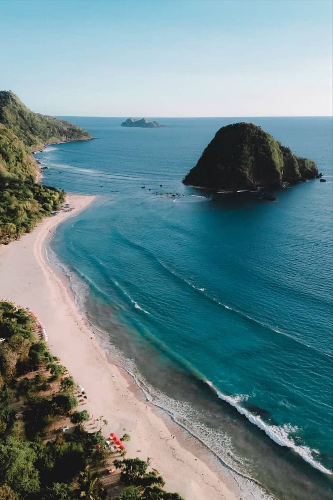
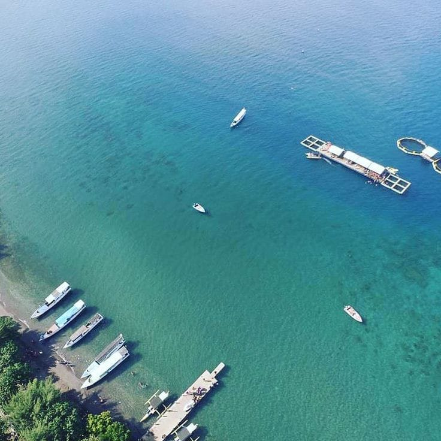
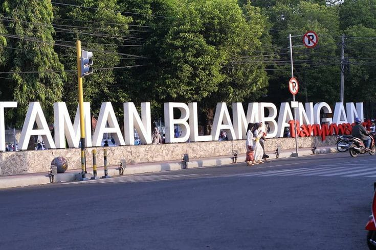

Banyuwangi adalah ibu kota Banyuwangi yang sekaligus menjadi pusat pemerintahan dan perekonomian dari Kabupaten Banyuwangi. Kabupaten Banyuwangi adalah sebuah kabupaten di Provinsi Jawa Timur, Indonesia. Berikut adalah beberapa objek wisata yang bisa anda kunjungi :
Pantai Pulau Merah merupakan salah satu ikon pariwisata Banyuwangi. Pantai ini cocok untuk bersantai hingga menjajal olahraga menantang. Pantai Pulau Merah berada di Desa Sumber Agung, Kecamatan Pesanggaran, Banyuwangi. Dari Taman Blambangan di pusat kota Banyuwangi, jaraknya sekitar 71 km yang bisa ditempuh dengan kendaraan selama sekitar dua jam. Pantai ini dikenal dengan bukit hijaunya yang berada dekat bibir pantai. Tanah dari bukit ini berwarna merah sehingga disebut Pulau Merah. Bukit ini menjorok ke arah tengah laut. Pengunjung dapat berjalan kaki menuju bukit tersebut saat air laut surut. Pantai Pulau Merah menyuguhkan pemandangan yang sedap dipandang. Selain itu, pantai ini juga dikenal dengan ombaknya yang tinggi. Cocok bagi wisatawan yang gemar berselancar. Tak heran banyak wisatawan mancanegara yang menjajal ombak di Pantai Pulau Merah. Pantai Pulau Merah Banyuwangi: Sejarah Pantai Pulau Merah Banyuwangi sebelumnya dikenal dengan nama Pantai Ringin Pintu. Baru dikenal sebagai Pulau Merah karena tanah bukit di bibir pantai berwarna kemerahan. Lokasi Pantai Pulau Merah berada di Desa Sumber Agung, Kecamatan Pesanggaran. Berikut jaraknya dari kota hingga bandara. Harga Tiket Masuk Pantai Pulau Merah Banyuwangi mematok biaya masuk. Harga tiket masuk untuk menikmati keindahan pantai sepuasnya Rp 10.000.
Sensasi Berenang dengan Hiu di Pantai Bangsring Banyuwangi, Maldivesnya Jawa Timur Akhir pekan menjadi kesempatan masyarakat untuk pergi berlibur ke sejumlah tempat wisata. Salah satunya di ekowisata Bangsring Banyuwangi Jawa Timur. Wisata Bangsring Banyuwangi berada di kawasan perairan selat Bali. Objek wisata ini masih kental dengan pesona alamnya. Bahkan, wisata pantai Bangsring Banyuwangi ini bisa dibilang dijuluki Maldives Jawa Timur. Bangsring menyuguhkan ekowisata yang berupa terumbukarang dan ikan. Wisata ini juga sekaligus dikelola oleh nelayan lokal yang telah dilakukan sejak 2008. Namun, Bangsring Underwater sendiri baru resmi dibuka sejak 2014. Sebagai wilayah konservasi, di sini Anda bisa melakukan penanaman terumbu karang sebagai bagian dari program Marine Education yang mengajak generasi penerus untuk mencintai dan menjaga pentingnya ekosistem laut. Untuk menuju kawasan wisata Pantai Bangsring, Anda perlu menyewa perahu untuk sampai di Rumah Apung Bangsring. Rumah Apung tersebut memiliki ukuran 27 x 7 meter Selain itu Anda juga bisa berenang dengan ikan hiu sirip hitam yang ditangkarkan di dalam keramba. Pengalaman ini akan menjadi pengalam yang berkesan sekaligus uji nyali bagi Anda. Jangan khawatir, Anda akan ditemani oleh pemandu yang berpengalaman dan harus memenuhi beberapa peraturan agar hiu tidak merasa terancam.
Setelah mengalami beberapa renovasi di beberapa bagian, kini taman Blambangan memiliki tampilan yang indah dan berbeda dari sebelumnya. Renovasi yang dilakukan menghasilkan trek khusus untuk jogging yang dibangun di sepanjang tepi taman. Luas area taman ini sekitar 32 ribu meter persegi. Fasilitas lain yang dihasilkan adalah arena skateboard dan lapangan basket. Salain itu, taman ini juga telah menyediakan wisata kuliner untuk setiap pengunjung yang datang. Dan satu lagi, jika kita menghadap arah barat dari, kita akan melihat ada Gesibu Blambangan atau yang lebih dikenal sebagai Gelanggang Seni dan Budaya dengan arsitektur dan strukturnya terlihat seperti candi. Setiap hari Minggu taman yang menjadi ikon kota Banyuwangi ini juga digunakan untuk Car Free Day. Taman ini juga kerapkali digunakan sebagai tempat untuk pagelaran seni, konser musik, hingga kegiatan upacara.
